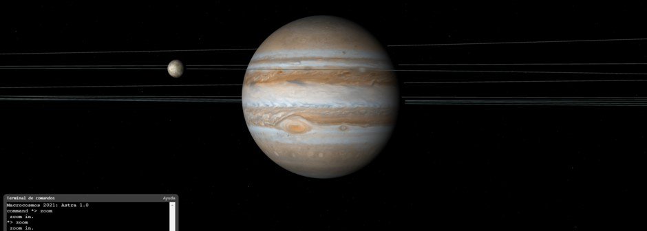

Astra Solar system
Solar system model managed by Astra
This project joins the 3d interactive representation of solar system with a powerfull terminal that runs Astra commands.
Among other possibilities, this model is capable of generating images of scenes in space, load real data of planetary positions and show orbital parameters and plane representations of the orbis. You can edit the rendering with a postprocessing tool, create lines, goto from one point to another and much more...